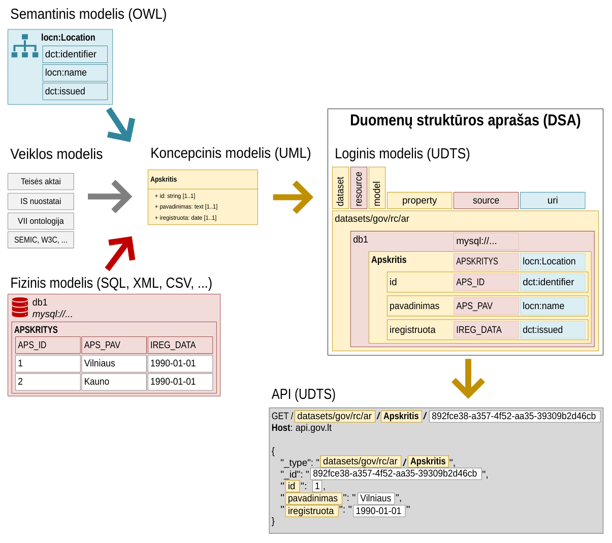

Duomenų struktūros aprašas#
Čia rasite Duomenų struktūros aprašo (DSA) lentelės specifikaciją.
Duomenų struktūros aprašas yra lentelė skirta fizinio, loginio ir semantinio duomenų modelių susiejimui, prieigos lygio nustatymui ir duomenų brandos lygio vertinimui.
Koncepcinis modelis yra UML klasių diagrama, sudaryta laikantis Conceptual model conventions (UML) reikalavimų. Koncepcinis modelis laikomas kaip vienintelis tiesios šaltinis ir yra sudaromas remiantis teisės aktais, informacinės sistemos nuostatais, semantiniais žodynais ir duomenų modeliu iš duomenų šaltinio.
Fizinis modelis šio dokumento kontekste yra duomenų schema apibūdinanti kur ir kaip duomenys yra saugomi ir kaip juos pasiekti. Schema apibrėžianti duomenų modelį priklauso nuo duomenų saugojimo formato. Jei duomenys saugomi SQL duomenų bazėse, tada DSA lentelėje nurodomi lentelių ir stulpelių pavadinimai, XML atveju nurodomos XPath išraiškos, JSON atveju nurodomos JSONPath išraiškos. DSA lentelėje fizinis modelis nurodomas source stulpelyje.
Loginis modelis yra duomenų schema, kuri naudojama duomenų apsikeitimui UDTS protokolu, loginis modelis rengiamas pagal koncepcinį modelį ir yra artimas semantiniam modeliui, tačiau skirtas duomenų publikavimui per API. Loginis modelis siejamas su fiziniu ir semantiniu modeliais.
Semantinis modelis yra nepriklausomas nuo to, kaip duomenys saugomi ar perduodami fiziškai, siejamas su tarptautiniais standartais ir plačiai naudojamais sąvokų žodynais.
Specifikacijos#
Duomenų katalogo Lietuvos taikymo profilis (DCAT-AP-LT)